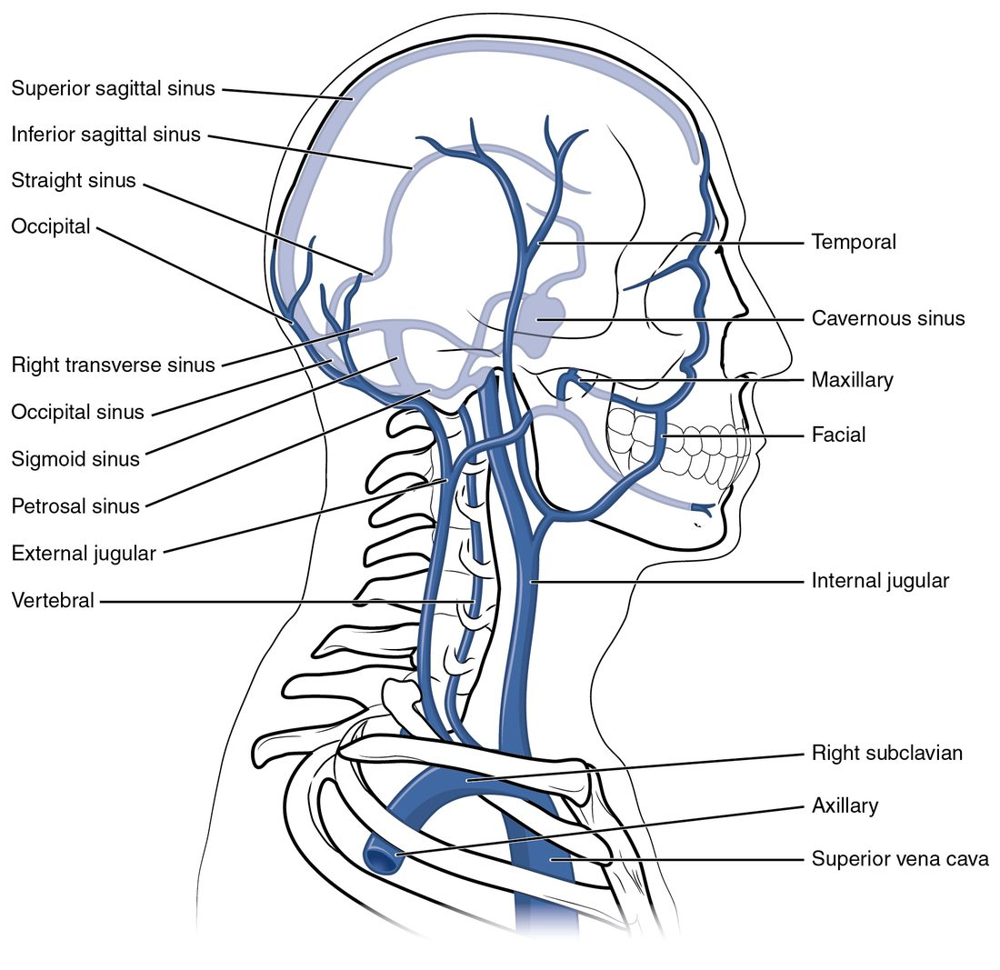
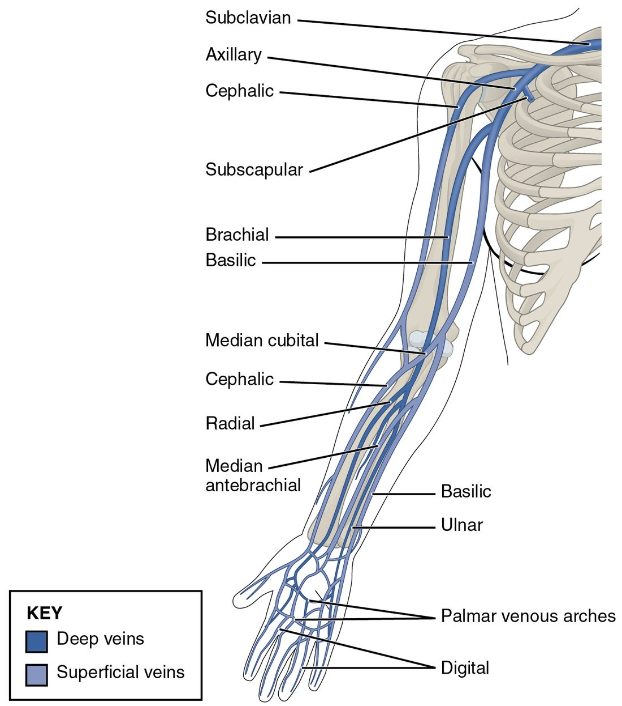
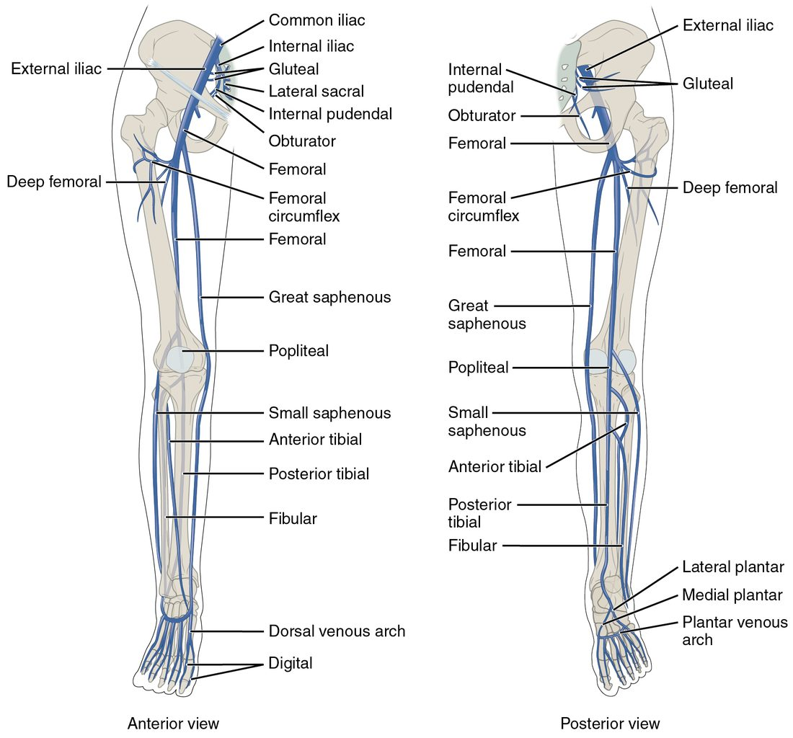
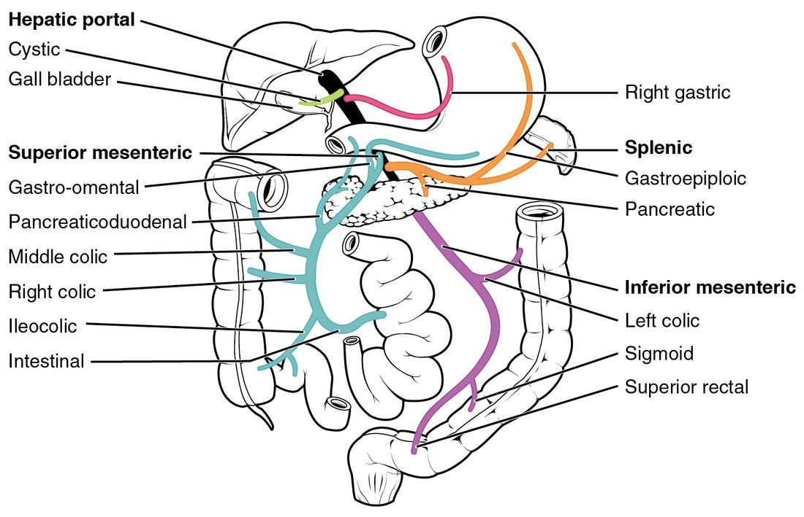

The major veins of the body mostly mirror the arteries, but with three twists that exam questions love: the veins of the head and trunk are not arranged the same way on both sides, many limb veins run just under the skin with no artery beside them, and blood from the gut does not go straight back to the heart. It passes through the liver first, in the hepatic portal system. This page follows blood the way it travels in veins, from small tributaries toward the heart, and ends with that detour through the liver.
Reading the venous tree backward
Look at the inside of your elbow or the back of your hand. The bluish lines are veins, and blood in them is moving toward your heart. Arteries branch as they leave the heart; veins join as they approach it. A tributary (tribut- = paid in) is a smaller vein that drains into a larger one, the way a stream feeds a river.
So you trace veins in the direction of flow: small veins join into larger ones, which end in the two venae cavae entering the right atrium. You met the venae cavae as great vessels. Figure 1 shows the whole system.

Three rules help:
- Deep veins follow arteries and share their names. The brachial vein runs beside the brachial artery; the femoral vein beside the femoral artery. In the forearm and leg, each deep artery usually has two thin veins, one on each side.
- Superficial veins have their own names. They run in the fat just under the skin, with no artery beside them. These are the veins you see, and the ones used for blood draws and IVs.
- Veins show more variation between people than arteries. The textbook pattern is the most common one, not the only one.
| Systemic arteries | Systemic veins | |
|---|---|---|
| Direction of flow | Away from the heart; they branch | Toward the heart; they join |
| Vessel leaving or entering the heart | One aorta from the left ventricle | Two venae cavae into the right atrium |
| Right–left pattern in the upper chest | One brachiocephalic trunk, on the right | Two brachiocephalic veins, right and left |
| Deep and superficial sets | Almost all deep | A deep set beside the arteries plus a superficial set under the skin |
| Blood from the gut | Supplied by single branches of the aorta | Passes through the liver before reaching the inferior vena cava |
| Inside the skull | Ordinary arteries with muscular walls | Dural venous sinuses: channels in the dura mater with no muscle and no valves |
The superior vena cava and its tributaries
The superior vena cava drains everything above the diaphragm except the heart itself and the lungs. Build it from its tributaries:
- On each side of the neck, the internal jugular vein (jugul- = throat) runs down beside the common carotid artery. It drains the brain, and much of the face and neck.
- Behind each sternoclavicular joint, the internal jugular vein joins the subclavian vein, which drains the arm. Their union forms the brachiocephalic vein.
- The right and left brachiocephalic veins join behind the right side of the sternum to form the superior vena cava. The left brachiocephalic vein is longer, because it has to cross the midline to reach the right-sided superior vena cava.
- Just before the superior vena cava enters the right atrium, it receives the azygos vein from behind.
Notice the contrast with the arteries: there is one brachiocephalic trunk, but there are two brachiocephalic veins.
The external jugular vein
The external jugular vein is a superficial vein. It collects blood from the scalp and the side of the face, runs down across the side of the neck just under the skin, and drains into the subclavian vein. Because it has no muscle over it, you can often see it. When a person sits up at about 45 degrees, it is normally flat. If it stays full and bulging, pressure in the right atrium is high, as it is when fluid squeezes the heart in cardiac tamponade.
The azygos system
The chest wall drains mostly into veins beside the spine. The azygos vein (a- = without, zyg- = yoke or pair: "unpaired") runs up the right side of the thoracic vertebrae, collecting the veins between the ribs, then arches forward over the root of the right lung into the superior vena cava. On the left, the smaller hemiazygos vein (hemi- = half) collects the lower left chest wall and crosses behind the aorta to join the azygos vein. The azygos system also connects to veins of the abdomen, so it gives blood a second route to the heart if the inferior vena cava is blocked.
Venous drainage of the brain
Veins inside the skull are unusual. Small veins of the brain drain into dural venous sinuses: channels between the two layers of the dura mater, the outermost of the meninges. A dural sinus is lined by endothelium but has no smooth muscle in its wall and no valves. Its walls are held open by the stiff dura, so it does not collapse. Trace the flow (Figure 2):
- The superior sagittal sinus (sagitt- = arrow, as in the sagittal plane) runs along the top of the brain in the midline, in the fold of dura between the two cerebral hemispheres. Cerebrospinal fluid drains into it through the arachnoid granulations.
- A smaller sinus along the lower edge of the same fold drains back into the straight sinus, which runs to the back of the skull.
- At the back of the skull the superior sagittal and straight sinuses meet. Blood turns sideways into the right and left transverse sinuses (trans- = across), which run around the back of the skull.
- Each transverse sinus curves down as an S-shaped sigmoid sinus (sigm- = the letter S).
- The sigmoid sinus leaves the skull through the jugular foramen and becomes the internal jugular vein.
The cavernous sinus (cavern- = cave) is a sponge-like sinus on each side of the sphenoid bone, beside the pituitary gland. The internal carotid artery and several cranial nerves to the eye muscles pass through or beside it. Veins from the face around the nose and upper lip connect to it through the veins of the eye socket. Older books call these veins valveless. They do have some valves, but blood in them can still flow toward the skull as well as away from it. An infection there can spread along them into the cavernous sinus, which is why a boil near the nose is treated seriously.

The inferior vena cava and its tributaries
The inferior vena cava drains everything below the diaphragm. It is the largest vein in your body. It begins at about the level of the fifth lumbar vertebra, where the right and left common iliac veins join, and runs up the back of the abdomen on the right side of the aorta. It passes through its own opening in the diaphragm, at about the level of the eighth thoracic vertebra, and enters the right atrium almost at once.
From the bottom up, its tributaries are:
- Common iliac veins, each formed by an external iliac vein from the leg and an internal iliac vein from the pelvic organs and buttock.
- Lumbar veins from the back muscles.
- Gonadal veins: testicular veins or ovarian veins. The right gonadal vein drains into the inferior vena cava itself; the left one drains into the vein from the left kidney.
- A vein from each kidney. The left one is longer, because it crosses in front of the aorta.
- Veins from the adrenal glands. The left one, again, drains into the vein from the left kidney.
- Hepatic veins (hepat- = liver), usually three, which leave the top of the liver and enter the inferior vena cava just below the diaphragm.
Notice what is missing: the stomach, spleen, pancreas and intestines have no vein that drains into the inferior vena cava. Their blood goes to the liver first.
Most of these asymmetries come from one fact: the inferior vena cava lies to the right of the midline, so veins from the left side travel farther to reach it, and some take a shortcut into a nearby vein.
Veins of the upper limb
The deep veins of the arm follow the arteries: radial and ulnar veins in the forearm join into brachial veins, which continue as the axillary vein in the armpit and the subclavian vein under the clavicle. The superficial veins are the ones you see (Figure 3):
- They start in a network of veins on the back of the hand.
- The cephalic vein (cephal- = head, an old name) runs up the thumb side of the forearm and the outer side of the arm, and drains into the axillary vein near the shoulder.
- The basilic vein (from an Arabic word for "inner") runs up the little-finger side and the inner arm, then dives deep to join the brachial veins. Their union forms the axillary vein.
- The median cubital vein (cubit- = elbow) crosses the front of the elbow diagonally, linking the cephalic and basilic veins.
- The median antebrachial vein (ante- = before, brachi- = arm: the forearm) runs up the middle of the front of the forearm.
The median cubital vein is the usual site for drawing blood. It is large, lies close to the skin, is held in place by the tissue around it, and has few nerves right beside it.

Veins of the lower limb
Deep veins again follow the arteries (Figure 4). The anterior tibial, posterior tibial and fibular veins of the calf join behind the knee as the popliteal vein. It continues up the thigh as the femoral vein, which receives the deep femoral vein from the thigh muscles and passes under the inguinal ligament to become the external iliac vein.
The superficial veins start in the dorsal venous arch on the top of the foot:
- The great saphenous vein (saphen- = clearly visible) starts at the inner end of the arch, passes in front of the medial malleolus and runs up the inner side of the leg and thigh to join the femoral vein just below the groin. It is the longest vein in the body. Surgeons often remove a segment of it to use as a graft that carries blood around a blocked coronary artery.
- The small saphenous vein starts at the outer end of the arch, passes behind the lateral malleolus, and runs up the back of the calf to join the popliteal vein behind the knee.
Superficial and deep veins are linked by short connecting veins whose valves let blood pass only inward, from superficial to deep. When calf muscles contract, the skeletal muscle pump drives blood up the deep veins. If those valves fail, blood pools in the superficial veins, which stretch into varicose veins. A clot in a deep vein of the calf or thigh is dangerous because a piece can break off and travel through the right side of the heart to the lungs.

The hepatic portal system
You have met one portal system already: the hypophyseal portal system, where blood passes through capillaries in the hypothalamus, then through small veins, then through a second capillary bed in the anterior pituitary before heading back to the heart. A portal system (port- = gate) is any route where blood passes through two capillary beds in a row, linked by veins.
The hepatic portal system does the same on a larger scale (Figure 5):
- First capillary beds. Blood flows through capillaries in the walls of the stomach and intestines, and in the spleen and pancreas. Nutrients absorbed from food, and anything else swallowed, enter the blood here.
- Veins that gather it. The superior mesenteric vein drains the small bowel and first half of the large bowel. The splenic vein drains the spleen and part of the pancreas and stomach. The inferior mesenteric vein drains the rest of the large bowel and usually empties into the splenic vein. Behind the pancreas, the superior mesenteric and splenic veins join to form the hepatic portal vein. Veins from the stomach drain into the portal vein directly.
- Second capillary bed. The hepatic portal vein enters the liver and branches down to the liver's sinusoids, the leaky, wide capillaries you met with the capillary types. There, liver cells take up nutrients, store glucose as glycogen, and break down drugs and toxins before the blood reaches the rest of the body.
- Out to the heart. Blood from the sinusoids collects into the hepatic veins, which drain into the inferior vena cava.
The liver has two blood supplies. About three-quarters of its blood arrives through the hepatic portal vein: rich in nutrients and partly deoxygenated. The remaining quarter arrives through an artery from the celiac trunk's common hepatic branch, carrying fully oxygenated blood. Both mix in the sinusoids.

Why the portal system matters clinically
- First-pass effect. A drug swallowed as a pill passes through the liver before it reaches the rest of the body, and the liver breaks some of it down. That is why some drugs need a bigger dose by mouth than by IV, and why some cannot be given by mouth at all.
- Backup when the liver scars. When long-term liver damage scars the liver, blood cannot flow easily through it. Pressure in the portal vein rises and blood backs up into its tributaries. It then takes detours through small connections to systemic veins, for example at the lower end of the esophagus. Those veins swell and can bleed heavily; a patient may vomit blood.
Putting it together: trace a drop of blood
Try these three routes.
- From the back of the right hand to the heart (superficial route): network on the back of the hand → cephalic vein → axillary vein → subclavian vein → right brachiocephalic vein → superior vena cava → right atrium.
- From the top of the brain: superior sagittal sinus → transverse sinus → sigmoid sinus → internal jugular vein → brachiocephalic vein → superior vena cava → right atrium.
- From the wall of the intestine: capillaries in the intestine → superior mesenteric vein → hepatic portal vein → sinusoids of the liver → hepatic veins → inferior vena cava → right atrium.